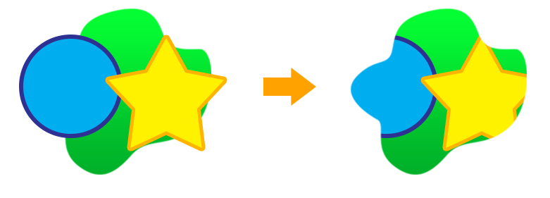
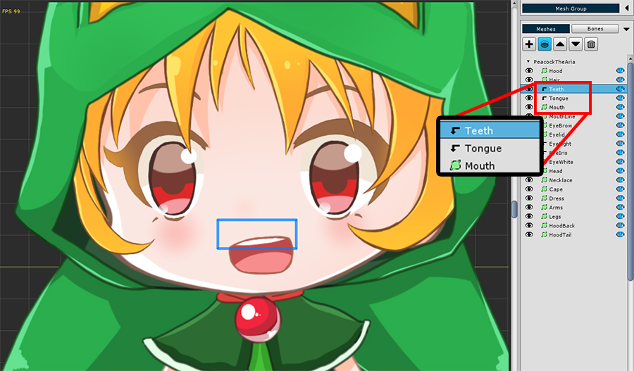
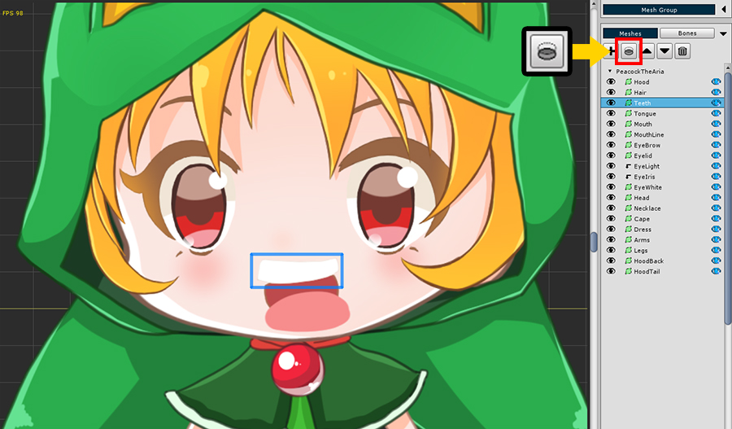

AnyPortrait > 入門ガイド > 2.3. クリッピングレイヤー

「クリッピング（Clipping）」は、他のメッシュの型をマスクにして一部だけをレンダリングする機能です。
この機能を使用すると、キャラクターの目、口などを表現できます。
メッシュにクリッピングレイヤーを設定して、下のレイヤーのメッシュをマスクにすることができます。

メッシュグループを開くと、「Teeth」と「Tongue」のメッシュの前に「折りたたまれた矢印形のアイコン」があることがわかります。
「Teeth」または「Tongue」メッシュを選択すると、メッシュが部分的にしかレンダリングされていないことがわかります。
これは、「Teeth」および「Tongue」メッシュに「クリッピングレイヤー(Clipping Layer)」プロパティがあるためです。
2つのメッシュのマスクは、すぐ下の「Mouth」メッシュです。

テストとして、2つのメッシュに適用されたクリッピングレイヤープロパティをオフにしましょう。
画像が隠されていない状態でレンダリングされていることがわかります。
PSDファイルからキャラクターを生成する場合、PSDファイルのクリッピングレイヤー設定がAnyPortraitでも適用されるため、この例では自動的にクリッピングが設定された状態でした。
クリッピングボタンを押して、自由にメッシュにクリッピングレンダリングを設定します。
カスタムシェーダを作成する規則に基づいて、クリッピングシェーダを直接作成することもできます。
クリッピングシェーダーの作成方法については、「関連ページ」を参照してください。
「AnyPortrait v1.6.0」に追加された「マスク(Mask)」は、クリッピングレンダリングをより柔軟に設定できる機能です。
「マスク」に関するマニュアルは、次のページを参照してください。
- マスク
- マスクとカスタムシェーダー
- マスクの組み合わせ
- マスクチェーン
- マスク専用メッシュ
- シースルー効果
クリッピングレイヤーは「コマンドバッファ」と「レンダリングテクスチャ」を活用して動作します。
したがって、この機能を使いすぎると、「ドローコール」が大幅に増加し、ゲームのレンダリングパフォーマンスが低下する可能性があります。
クリッピングレイヤーはカメラに接続して動作します。
つまり、「キャラクターをレンダリングするカメラ」を自動的に検出し、クリッピングレンダリングの準備手順を正常に行う必要があります。
また、レンダーパイプラインの影響を大きく受けます。
プロジェクトやキャラクターの設定やシーンの構成が適切でない場合、クリッピングレンダリングは正しく動作しません。
クリッピングレンダリングが正常に動作しない場合は、「関連ページ」を参照してください。